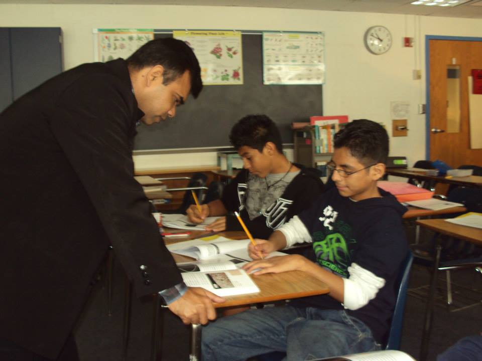

Teacher
I am teaching in class 8 as part of my internship in Poe Middle School, Annandale, Virginia, USA.
Student
I am doing my class work in George Mason University, Virginia, USA.

University Cafetaria
This is one of the cafetarias of George Mason University in Johnson Building. I used to take my lunch here.